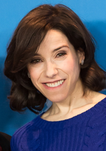
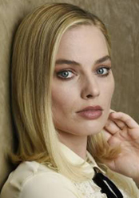
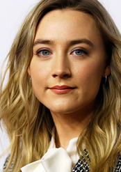
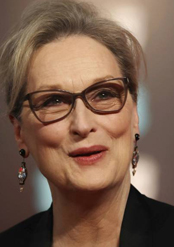

-
Frances McDormand, por : Tres anuncios en las afueras
(Gibson City, Illinois, 23 de junio de 1957) es una actriz estadounidense. McDormand se encuentra entre el grupo de actores que ha conseguido la Triple Corona de la Actuación: Óscar a la mejor actriz por Fargo y por Three Billboards Outside Ebbing, Missouri; Premio Tony a la mejor actriz principal en una obra de teatro por la producción original de Broadway Good People (2011) y Primetime Emmy a la mejor actriz en una Miniserie o telefilme por Olive Kitteridge (2014).
-
Sally Hawkins, por : La forma del agua
(27 de abril de 1976) es una actriz británica. En 2002 hizo su debut cinematográfico en All or Nothing de Mike Leigh. Continuó trabajando con Leigh, apareciendo en un papel secundario en El secreto de Vera Drake (2004) y protagonizando Happy-Go-Lucky (2008), actuación por la que fue aclamada y acredora al Globo de oro por mejor actriz de comedia o musical y el Oso de Plata a la Mejor Actriz.
-
Margot Robbie, por : Yo, Tonya
(Dalby, Queensland; 2 de julio de 1990) es una actriz, modelo y productora australiana, más conocida por haber interpretado a Donna Freedman en la serie Neighbours, a Naomi Belfort en la película El lobo de Wall Street, a Jane Porter en la película La leyenda de Tarzán, a Harley Quinn en la película de villanos Escuadrón Suicida de DC Comics y a Tonya Harding en el biopic I, Tonya.
-
Saoirse Ronan, por : Lady Bird
Bronx, Nueva York; 12 de abril de 1994) es una actriz irlandesa.2 Hija del también actor Paul Ronan. Ronan ha estado tres veces nominada a los Premios Oscar, primero recibió la nominación a la Mejor actriz de reparto por Atonement (2007) y una nominación a Mejor actriz por Brooklyn (2015). Su tercera nominación fue en 2018 por la película "Lady Bird". También recibió tres nominaciones a los premios BAFTA, dos Premios Globos de Oro, dos Premios del Sindicato de Actores y un Premio Satellite a la mejor actriz.
-
Meryl Streep, por : Los archivos del Pentágono
Summit, Nueva Jersey, 22 de junio de 1949),1 es una actriz estadounidense de teatro, cine y televisión, candidata en 21 ocasiones al premio Óscar. Debutó en las tablas con The Playboy of Seville en 1971 y fue nominada posteriormente al premio Tony por Recuerdo de dos lunes y 27 vagones llenos de algodón en 1976. Debutó en la pantalla chica con The Deadliest Season y en el cine con Julia en 1977. En 1978, recibió el premio Emmy por su protagónico en la serie Holocausto y fue candidata por primera vez al Óscar por The Deer Hunter el mismo año, premio que ganó posteriormente por las cintas Kramer vs. Kramer (1979), La decisión de Sophie (1982) y La dama de hierro (2011). Gracias a The Post , Streep ostenta el mayor número de nominaciones a este galardón, 21, más que ningún otro actor o actriz en la historia.